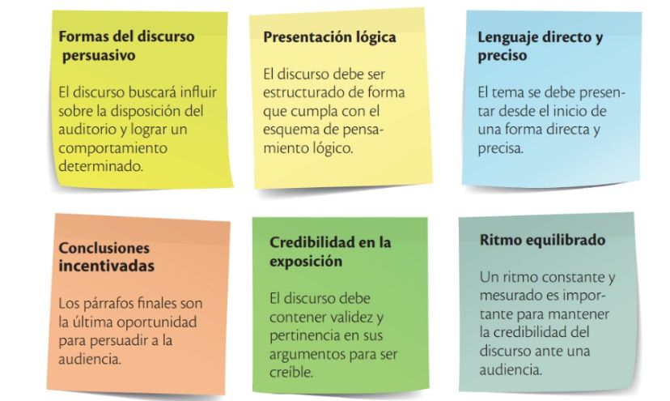

El discurso persuasivo es una exposición de razonamientos cuyo propósito es influir en la acción o el pensamiento de otras personas. Entre sus características, están las siguientes:
El discurso persuasivo, por su naturaleza, contiene también las técnicas propias de un discurso oral: hacer pausas que propicien la expectación en los oyentes; utilizar gestos para que el público comprenda mejor; emplear un volumen de voz adecuado, de manera que no se escuche como si se gritara o se hablara en voz baja; usar palabras adecuadas a la edad y el nivel académico del auditorio; y exponer las ideas con claridad.
